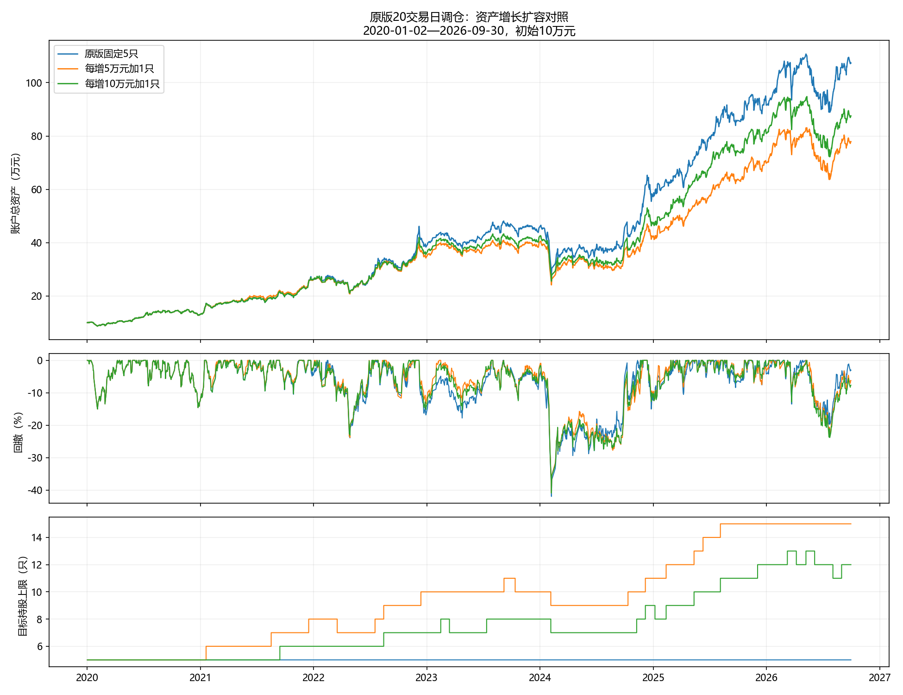

2020-01-02至2026-09-30，独立10万元空仓起步。每增加初始本金的50%或100%增加一只，初始5只、最多15只。仅在原定20交易日调仓时，按前一交易日收盘总资产（现金、持仓与应收分红）定档；回落允许降档，无缓冲。98%目标仓位、原因子与排序、原保留排名缓冲及执行规则均保留，无训练或选参。
| 方案 | 期末资产/万元 | 累计收益 | 年化收益 | 最大回撤 | Sharpe | 成交笔数 | 费用含分红税/元 | 期末目标上限 | 期末实际只数 |
|---|---|---|---|---|---|---|---|---|---|
| 原版固定5只 | 107.36 | 973.55% | 42.17% | 41.96% | 1.473 | 947 | 44333.61 | 5 | 5 |
| 每增5万元加1只 | 77.88 | 678.80% | 35.56% | 40.90% | 1.375 | 1421 | 36262.92 | 15 | 15 |
| 每增10万元加1只 | 87.54 | 775.38% | 37.93% | 40.92% | 1.410 | 1158 | 39447.22 | 12 | 12 |
Sharpe口径：扣费每日简单收益均值÷样本标准差（ddof=1）×√252，无风险利率0%；首日收益相对初始10万元计算。不是用复合年化收益除以波动率，未对齐SuperMind默认无风险利率与算法。

停牌、跌停或未完成卖出可能使实际持股数量暂时超过新目标上限；不能为满足上限虚构卖出。每次目标组合正股数均不超过当期上限。
固定5只控制组重新运行，逐日净值与此前原版回放完全一致。完整明细保存在daily_equity.parquet、trades.parquet、schedules.parquet；验证见validation.json。
这是已知历史区间的规则比较，不是新训练或独立盲测。沿用本地日线开盘撮合近似、万三最低5元及历史印花税/过户费、T+1和整手限制、公司行动与分红税。每日高低价约束等执行近似不能替代SuperMind服务器或真实成交；不强制期末平仓，未扣未来平仓费用与未实现的分红税。历史股票池完整性与供应商数据仍有局限。不得用本区间表现自动晋升策略。